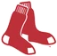

Playoffs Pennant Chase Mode
The regular season is on. Here is the bracket if it ended today (games through May 14), the chase, and the site’s own odds. This page switches to a live bracket for each league automatically once its postseason starts.
Major League Baseball Tier 1 · Pennant Chase
If the Season Ended Today
World Series
The Chase
East Division Title top 1 in
| # | Team | W | L | Pct | GB | vs. cut | Magic / elim. | Left | Rem. SOS | L10 | Strk | Proj. W | World Series | Title | Relegated |
|---|---|---|---|---|---|---|---|---|---|---|---|---|---|---|---|
| 1 |  Detroit Wolverines Detroit Wolverines | 25 | 17 | .595 | - | 0 | M 110 | 109 | .496 | 8-2 | W1 | 82 | 31.9% | 14.0% | <0.1% |
| 2 |  Miami Marlins Miami Marlins | 25 | 17 | .595 | - | 0 | E 110 | 109 | .492 | 3-7 | L1 | 83 | 31.3% | 13.6% | <0.1% |
| 3 |  Brooklyn Gothams Brooklyn Gothams | 23 | 19 | .548 | 2 | 2 | E 108 | 109 | .493 | 5-5 | L2 | 79 | 12.3% | 5.0% | 0.3% |
| 4 |  New York Yankees New York Yankees | 23 | 19 | .548 | 2 | 2 | E 108 | 109 | .500 | 7-3 | W3 | 80 | 15.1% | 6.1% | 0.2% |
| 5 |  Washington Cherry Blossoms Washington Cherry Blossoms | 21 | 21 | .500 | 4 | 4 | E 106 | 109 | .500 | 4-6 | W1 | 76 | 4.0% | 1.3% | 1.7% |
| 6 |  Philadelphia Phillies Philadelphia Phillies | 20 | 22 | .476 | 5 | 5 | E 105 | 109 | .499 | 4-6 | L1 | 74 | 2.3% | 0.9% | 2.2% |
| 7 |  St. Louis Cardinals St. Louis Cardinals | 20 | 22 | .476 | 5 | 5 | E 105 | 109 | .505 | 4-6 | W1 | 74 | 2.3% | 0.9% | 2.6% |
| 8 |  Toronto Blue Jays Toronto Blue Jays | 19 | 23 | .452 | 6 | 6 | E 104 | 109 | .505 | 8-2 | L1 | 71 | 0.7% | 0.1% | 6.5% |
| 9 |  Boston Red Sox | 17 | 25 | .405 | 8 | 8 | E 102 | 109 | .504 | 4-6 | W2 | 67 | 0.1% | <0.1% | 20.6% |
| 10 |  Atlanta Braves Atlanta Braves | 14 | 28 | .333 | 11 | 11 | E 99 | 109 | .510 | 2-8 | L5 | 62 | 0.0% | 0.0% | 65.8% |
West Division Title top 1 in
| # | Team | W | L | Pct | GB | vs. cut | Magic / elim. | Left | Rem. SOS | L10 | Strk | Proj. W | World Series | Title | Relegated |
|---|---|---|---|---|---|---|---|---|---|---|---|---|---|---|---|
| 1 |  Oakland Athletics Oakland Athletics | 27 | 15 | .643 | - | 0 | M 110 | 109 | .492 | 5-5 | W1 | 87 | 38.6% | 22.1% | 0.0% |
| 2 |  San Francisco Seals San Francisco Seals | 27 | 15 | .643 | - | 0 | E 110 | 109 | .493 | 7-3 | W3 | 87 | 45.9% | 27.8% | 0.0% |
| 3 |  Seattle Mariners Seattle Mariners | 24 | 18 | .571 | 3 | 3 | E 107 | 109 | .497 | 8-2 | W2 | 81 | 9.4% | 4.9% | 0.2% |
| 4 |  Houston Astros Houston Astros | 22 | 20 | .524 | 5 | 5 | E 105 | 109 | .495 | 6-4 | L1 | 78 | 3.5% | 1.9% | 0.9% |
| 5 |  Colorado Rockies Colorado Rockies | 21 | 21 | .500 | 6 | 6 | E 104 | 109 | .503 | 6-4 | W5 | 76 | 1.6% | 0.8% | 2.1% |
| 6 |  Chicago Cubs Chicago Cubs | 20 | 22 | .476 | 7 | 7 | E 103 | 109 | .503 | 4-6 | L2 | 74 | 0.7% | 0.4% | 4.9% |
| 7 |  Milwaukee Brewers Milwaukee Brewers | 19 | 23 | .452 | 8 | 8 | E 102 | 109 | .499 | 4-6 | L1 | 71 | 0.1% | <0.1% | 11.6% |
| 8 |  Arizona Diamondbacks Arizona Diamondbacks | 18 | 24 | .429 | 9 | 9 | E 101 | 109 | .506 | 4-6 | W1 | 70 | <0.1% | <0.1% | 15.3% |
| 9 |  Dallas Griffins Dallas Griffins | 18 | 24 | .429 | 9 | 9 | E 101 | 109 | .501 | 3-7 | L2 | 69 | <0.1% | <0.1% | 23.0% |
| 10 |  Los Angeles Dodgers Los Angeles Dodgers | 17 | 25 | .405 | 10 | 10 | E 100 | 109 | .508 | 4-6 | L2 | 66 | <0.1% | <0.1% | 42.0% |
Title Race
Chance of winning the World Series.
| Team | Record | Odds | Proj. W |
|---|---|---|---|
| San Francisco Seals | 27-15 | 27.8% | 87 |
| Oakland Athletics | 27-15 | 22.1% | 87 |
| Detroit Wolverines | 25-17 | 14.0% | 82 |
| Miami Marlins | 25-17 | 13.6% | 83 |
| New York Yankees | 23-19 | 6.1% | 80 |
| Brooklyn Gothams | 23-19 | 5.0% | 79 |
Relegation Watch
Chance of dropping to the ABL. Last place in each division goes down.
| Team | Record | Odds | Proj. W |
|---|---|---|---|
| Atlanta Braves | 14-28 | 65.8% | 62 |
| Los Angeles Dodgers | 17-25 | 42.0% | 66 |
| Dallas Griffins | 18-24 | 23.0% | 69 |
| Boston Red Sox | 17-25 | 20.6% | 67 |
| Arizona Diamondbacks | 18-24 | 15.3% | 70 |
| Milwaukee Brewers | 19-23 | 11.6% | 71 |
Big Games Coming Up next 14 days, ranked by how much they move the odds
- May 15 CHC @ SFSSeals' playoff odds swing 7.2 points on this one; division rivals, Seals lead by 7.
- May 15 LAD @ BOSDodgers' relegation odds swing 7.2 points on this one; same race, Dodgers level.
- May 15 MIA @ DETMarlins' playoff odds swing 7.7 points on this one; division rivals, Marlins level.
- May 16 LAD @ TORDodgers' relegation odds swing 7.5 points on this one; same race, Dodgers trail by 2.
- May 18 SFS @ COLSeals' playoff odds swing 7.1 points on this one; division rivals, Seals lead by 6.
- May 19 OAK @ BrGoAthletics' playoff odds swing 8.7 points on this one; same race, Athletics lead by 4.
- May 19 NYY @ DETWolverines' playoff odds swing 8.3 points on this one; division rivals, Wolverines lead by 2.
- May 24 LAD @ CHCDodgers' relegation odds swing 7.3 points on this one; division rivals, Dodgers trail by 3.
- May 26 OAK @ MIAAthletics' playoff odds swing 7.4 points on this one; same race, Athletics lead by 2.
- May 27 WCB @ DETWolverines' playoff odds swing 7.3 points on this one; division rivals, Wolverines lead by 4.
Playoff Odds over Time
American Baseball League Tier 2 · Pennant Chase
If the Season Ended Today
Play In
Promotion Playoffs
Western Conference: Promotion Playoffs · best of 7
 Black Sox26-15
Black Sox26-15Winner promoted to MLB
American Championship
American Championship · best of 7
Both finalists already promoted
The Chase
Western Conference top 3 in
| # | Team | W | L | Pct | GB | vs. cut | Magic / elim. | Left | Rem. SOS | L10 | Strk | Proj. W | Playoffs | Bye | Promoted | Relegated |
|---|---|---|---|---|---|---|---|---|---|---|---|---|---|---|---|---|
| 1 | Southside Black Sox | 26 | 15 | .634 | - | +3 | M 108 | 110 | .494 | 7-3 | L1 | 86 | 79.0% | 42.1% | 34.3% | 0.7% |
| 2 |  Portland Beavers Portland Beavers | 24 | 17 | .585 | 2 | +1 | M 110 | 110 | .494 | 6-4 | W2 | 82 | 52.7% | 16.8% | 16.9% | 3.5% |
| 3 |  San Diego Padres San Diego Padres | 24 | 17 | .585 | 2 | +1 | M 110 | 110 | .494 | 7-3 | W2 | 83 | 63.5% | 22.7% | 22.9% | 2.1% |
| 4 |  Kansas City Monarchs Kansas City Monarchs | 23 | 18 | .561 | 3 | 1 | E 110 | 110 | .495 | 5-5 | L2 | 80 | 33.1% | 7.0% | 8.8% | 8.5% |
| 5 |  Minnesota Loons Minnesota Loons | 22 | 19 | .537 | 4 | 2 | E 109 | 110 | .495 | 7-3 | W1 | 78 | 24.1% | 4.3% | 6.2% | 12.1% |
| 6 |  Anaheim Angels Anaheim Angels | 21 | 20 | .512 | 5 | 3 | E 108 | 110 | .500 | 5-5 | L2 | 78 | 22.2% | 3.9% | 5.9% | 13.8% |
| 7 |  Las Vegas Gamblers Las Vegas Gamblers | 21 | 20 | .512 | 5 | 3 | E 108 | 110 | .501 | 5-5 | W1 | 75 | 10.4% | 1.5% | 2.4% | 27.1% |
| 8 |  Salt Lake Bees Salt Lake Bees | 20 | 21 | .488 | 6 | 4 | E 107 | 110 | .497 | 5-5 | W1 | 74 | 7.8% | 1.0% | 1.6% | 32.5% |
| 9 |  Austin Violets Austin Violets | 19 | 22 | .463 | 7 | 5 | E 106 | 110 | .501 | 4-6 | W2 | 71 | 2.5% | 0.2% | 0.3% | 53.3% |
| 10 |  Mexico City Golden Eagles Mexico City Golden Eagles | 19 | 22 | .463 | 7 | 5 | E 106 | 110 | .503 | 5-5 | W3 | 73 | 4.5% | 0.4% | 0.8% | 43.9% |
Eastern Conference top 3 in
| # | Team | W | L | Pct | GB | vs. cut | Magic / elim. | Left | Rem. SOS | L10 | Strk | Proj. W | Playoffs | Bye | Promoted | Relegated |
|---|---|---|---|---|---|---|---|---|---|---|---|---|---|---|---|---|
| 1 |  Montreal Royeaux Montreal Royeaux | 24 | 17 | .585 | - | +4 | M 107 | 110 | .497 | 8-2 | W6 | 81 | 81.4% | 40.7% | 33.5% | 0.2% |
| 2 |  Cleveland Spiders Cleveland Spiders | 23 | 18 | .561 | 1 | +3 | M 108 | 110 | .500 | 6-4 | L1 | 80 | 77.0% | 35.0% | 32.0% | 0.2% |
| 3 |  New Orleans Athletics New Orleans Athletics | 20 | 21 | .488 | 4 | 0 | M 111 | 110 | .502 | 4-6 | L1 | 74 | 33.6% | 6.6% | 8.6% | 3.3% |
| 4 |  Pittsburgh Pirates Pittsburgh Pirates | 20 | 21 | .488 | 4 | 0 | E 111 | 110 | .502 | 4-6 | L2 | 75 | 35.2% | 7.3% | 9.8% | 3.0% |
| 5 |  San Juan Coquis San Juan Coquis | 20 | 21 | .488 | 4 | 0 | E 111 | 110 | .504 | 3-7 | L1 | 73 | 26.4% | 4.6% | 6.0% | 5.2% |
| 6 |  Baltimore Orioles Baltimore Orioles | 18 | 23 | .439 | 6 | 2 | E 109 | 110 | .502 | 4-6 | W1 | 72 | 17.4% | 2.8% | 4.1% | 8.3% |
| 7 |  Tampa Bay Rays Tampa Bay Rays | 18 | 23 | .439 | 6 | 2 | E 109 | 110 | .502 | 4-6 | W1 | 71 | 13.0% | 1.5% | 2.7% | 10.8% |
| 8 | Cincinnati Reds | 17 | 24 | .415 | 7 | 3 | E 108 | 110 | .506 | 3-7 | L1 | 69 | 7.4% | 0.7% | 1.7% | 17.5% |
| 9 |  Nashville Stars Nashville Stars | 16 | 25 | .390 | 8 | 4 | E 107 | 110 | .506 | 3-7 | L3 | 68 | 5.9% | 0.5% | 1.1% | 20.3% |
| 10 |  New York Knights New York Knights | 15 | 26 | .366 | 9 | 5 | E 106 | 110 | .506 | 5-5 | L3 | 66 | 2.6% | 0.3% | 0.4% | 33.7% |
Promotion Race
Chance of moving up to MLB. Both American Championship finalists go up.
| Team | Record | Odds | Proj. W |
|---|---|---|---|
| Southside Black Sox | 26-15 | 34.3% | 86 |
| Montreal Royeaux | 24-17 | 33.5% | 81 |
| Cleveland Spiders | 23-18 | 32.0% | 80 |
| San Diego Padres | 24-17 | 22.9% | 83 |
| Portland Beavers | 24-17 | 16.9% | 82 |
| Pittsburgh Pirates | 20-21 | 9.8% | 75 |
| Kansas City Monarchs | 23-18 | 8.8% | 80 |
| New Orleans Athletics | 20-21 | 8.6% | 74 |
Relegation Watch
Chance of dropping to the FBL. The bottom three go down, split by conference to match the promoted FBL clubs.
| Team | Record | Odds | Proj. W |
|---|---|---|---|
| Austin Violets | 19-22 | 53.3% | 71 |
| Mexico City Golden Eagles | 19-22 | 43.9% | 73 |
| New York Knights | 15-26 | 33.7% | 66 |
| Salt Lake Bees | 20-21 | 32.5% | 74 |
| Las Vegas Gamblers | 21-20 | 27.1% | 75 |
| Nashville Stars | 16-25 | 20.3% | 68 |
Big Games Coming Up next 14 days, ranked by how much they move the odds
- May 15 AUS @ KCMMonarchs' playoff odds swing 7.9 points on this one; division rivals, Monarchs lead by 4.
- May 15 PoBe @ PITBeavers' playoff odds swing 7.9 points on this one; same race, Beavers lead by 4.
- May 16 NOLA @ SDPPadres' playoff odds swing 8.0 points on this one; same race, Padres lead by 4.
- May 18 NYK @ NASHKnights' relegation odds swing 7.9 points on this one; division rivals, Knights trail by 1.
- May 19 PIT @ CLEPirates' playoff odds swing 7.9 points on this one; division rivals, Pirates trail by 3.
- May 21 KCM @ LAAMonarchs' playoff odds swing 8.1 points on this one; division rivals, Monarchs lead by 2.
- May 23 MEXC @ PITGolden Eagles' relegation odds swing 8.3 points on this one; same race, Golden Eagles trail by 1.
- May 25 SDP @ LVGPadres' playoff odds swing 8.2 points on this one; division rivals, Padres lead by 3.
- May 25 MIN @ SLBBees' relegation odds swing 8.5 points on this one; division rivals, Bees trail by 2.
- May 27 MEXC @ PoBeGolden Eagles' relegation odds swing 8.4 points on this one; division rivals, Golden Eagles trail by 5.
Promotion Odds over Time
Federal Baseball League Tier 3 · Pennant Chase
If the Season Ended Today
Wild Card 2
Round 3
Federal Promotion
Federal Semis
Federal Final
Seeds 1 and 2 are promoted by finishing top two; the winner of the Federal Promotion round is the third promoted club.
The Chase
League-Wide Seeds top 7 in
| # | Team | W | L | Pct | GB | vs. cut | Magic / elim. | Left | Rem. SOS | L10 | Strk | Proj. W | Playoffs | Top 2 (auto-promo) | Promoted |
|---|---|---|---|---|---|---|---|---|---|---|---|---|---|---|---|
| 1 |  Monterrey Sultanes Monterrey Sultanes | 26 | 13 | .667 | - | +5 | M 107 | 111 | .491 | 4-6 | W2 | 88 | 95.5% | 62.5% | 74.0% |
| 2 |  Sacramento Solons Sacramento Solons | 26 | 15 | .634 | 1 | +4 | M 107 | 110 | .499 | 5-5 | W3 | 86 | 92.1% | 49.9% | 62.4% |
| 3 |  Louisville Bats Louisville Bats | 24 | 16 | .600 | 2½ | +2.5 | M 109 | 111 | .497 | 5-5 | L2 | 82 | 74.1% | 21.2% | 33.7% |
| 4 |  Hartford Yard Goats Hartford Yard Goats | 23 | 17 | .575 | 3½ | +1.5 | M 110 | 111 | .497 | 6-4 | W2 | 81 | 69.7% | 16.8% | 28.9% |
| 5 |  Vancouver Mounties Vancouver Mounties | 23 | 18 | .561 | 4 | +1 | M 110 | 110 | .499 | 6-4 | L1 | 80 | 63.8% | 13.5% | 23.9% |
| 6 |  Eugene Larks Eugene Larks | 22 | 18 | .550 | 4½ | +0.5 | M 111 | 111 | .500 | 6-4 | W1 | 80 | 60.7% | 11.8% | 22.1% |
| 7 |  Santo Domingo Gallos Santo Domingo Gallos | 22 | 19 | .537 | 5 | 0 | M 111 | 110 | .494 | 5-5 | W1 | 78 | 46.7% | 6.2% | 13.2% |
| 8 |  Savannah Bananas Savannah Bananas | 22 | 19 | .537 | 5 | 0 | E 111 | 110 | .498 | 5-5 | L1 | 78 | 45.1% | 6.6% | 13.2% |
| 9 |  Alaska Athletics Alaska Athletics | 21 | 20 | .512 | 6 | 1 | E 110 | 110 | .502 | 7-3 | W1 | 76 | 32.4% | 3.6% | 7.7% |
| 10 |  Albuquerque Spirit Albuquerque Spirit | 20 | 20 | .500 | 6½ | 1.5 | E 110 | 111 | .501 | 5-5 | L5 | 75 | 24.5% | 2.1% | 5.3% |
| 11 |  Richmond Flying Squirrels Richmond Flying Squirrels | 20 | 21 | .488 | 7 | 2 | E 109 | 110 | .502 | 4-6 | W1 | 75 | 21.4% | 1.6% | 3.9% |
| 12 |  Hoboken Zephyrs Hoboken Zephyrs | 19 | 21 | .475 | 7½ | 2.5 | E 109 | 111 | .505 | 5-5 | W1 | 74 | 19.8% | 1.4% | 3.6% |
| 13 |  Carolina Disco Turkeys Carolina Disco Turkeys | 19 | 21 | .475 | 7½ | 2.5 | E 109 | 110 | .502 | 5-5 | L1 | 74 | 16.6% | 1.1% | 2.8% |
| 14 |  Memphis Pharoahs Memphis Pharoahs | 19 | 22 | .463 | 8 | 3 | E 108 | 110 | .504 | 5-5 | L1 | 73 | 15.8% | 0.9% | 2.7% |
| 15 |  Honolulu Makani Honolulu Makani | 18 | 23 | .439 | 9 | 4 | E 107 | 110 | .501 | 6-4 | L1 | 70 | 4.8% | 0.1% | 0.5% |
| 16 |  Oklahoma City Twisters Oklahoma City Twisters | 18 | 23 | .439 | 9 | 4 | E 107 | 110 | .503 | 5-5 | L2 | 70 | 5.6% | 0.2% | 0.8% |
| 17 |  San Antonio Rebeldes San Antonio Rebeldes | 18 | 23 | .439 | 9 | 4 | E 107 | 110 | .503 | 5-5 | W1 | 70 | 5.2% | 0.2% | 0.6% |
| 18 |  Orlando Juicers Orlando Juicers | 17 | 24 | .415 | 10 | 5 | E 106 | 110 | .503 | 4-6 | W2 | 69 | 4.2% | <0.1% | 0.5% |
| 19 |  Inland Empire 66ers Inland Empire 66ers | 16 | 25 | .390 | 11 | 6 | E 105 | 110 | .505 | 4-6 | L1 | 67 | 1.8% | <0.1% | 0.2% |
| 20 |  Charlotte Knights Charlotte Knights | 13 | 28 | .317 | 14 | 9 | E 102 | 110 | .507 | 3-7 | L3 | 62 | 0.2% | 0.0% | <0.1% |
Promotion Race
Chance of moving up to the ABL. Top two seeds, plus the Federal Promotion round winner.
| Team | Record | Odds | Proj. W |
|---|---|---|---|
| Monterrey Sultanes | 26-13 | 74.0% | 88 |
| Sacramento Solons | 26-15 | 62.4% | 86 |
| Louisville Bats | 24-16 | 33.7% | 82 |
| Hartford Yard Goats | 23-17 | 28.9% | 81 |
| Vancouver Mounties | 23-18 | 23.9% | 80 |
| Eugene Larks | 22-18 | 22.1% | 80 |
| Santo Domingo Gallos | 22-19 | 13.2% | 78 |
| Savannah Bananas | 22-19 | 13.2% | 78 |
Big Games Coming Up next 14 days, ranked by how much they move the odds
- May 15 EUGL @ SaSaLarks' playoff odds swing 9.6 points on this one; same race, Larks lead by 0.5.
- May 16 SaSa @ EUGLBananas' playoff odds swing 9.0 points on this one; same race, Bananas trail by 0.5.
- May 16 VANC @ ALSKMounties' playoff odds swing 8.5 points on this one; division rivals, Mounties lead by 2.
- May 17 MONT @ SaSaBananas' playoff odds swing 8.7 points on this one; same race, Bananas trail by 5.
- May 19 SDG @ HONOGallos' playoff odds swing 8.2 points on this one; same race, Gallos lead by 4.
- May 24 EUGL @ HYGLarks' playoff odds swing 8.4 points on this one; same race, Larks trail by 1.
- May 25 ALSK @ MePhAthletics' playoff odds swing 8.8 points on this one; same race, Athletics lead by 2.
- May 26 SDG @ SaSaGallos' playoff odds swing 8.6 points on this one; division rivals, Gallos level.
- May 27 SARe @ EUGLLarks' playoff odds swing 8.2 points on this one; division rivals, Larks lead by 4.5.
- May 28 RiFS @ SaSaBananas' playoff odds swing 8.4 points on this one; division rivals, Bananas lead by 2.
Promotion Odds over Time
How the Odds Work (the site’s Projection, Not OOTP’s)
10,000 simulations of every remaining regular-season game, then the bracket. Team strength is half Pythagorean record (runs scored and allowed, exponent 1.83) and half actual win percentage, regressed toward .500 by 70 games of average baseball, because 40 games is not a season. Single games use log5 with a 4-point home edge; series lengths come from league_playoffs.csv. Ties are broken at random. Magic numbers count wins by the team plus losses by the first team out of the spot; elimination numbers count the opposite against the last team in. "Rem. SOS" is the average current winning percentage of the remaining opponents.
Format: MLB’s two division winners meet in a best-of-9 World Series; last place in each division is relegated. ABL: top three in each conference; the winner gets a bye, #2 hosts #3 in a one-game Play In inside the conference; Promotion Playoffs and American Championship are best of 7, and both finalists are promoted. The bottom three ABL clubs are relegated, split by conference to match the promoted FBL clubs. FBL: seven league-wide seeds by record in a ladder (7 v 6, the winner plays 5, then 4, 3, 2, 1); the three clubs in the semifinal round are promoted.